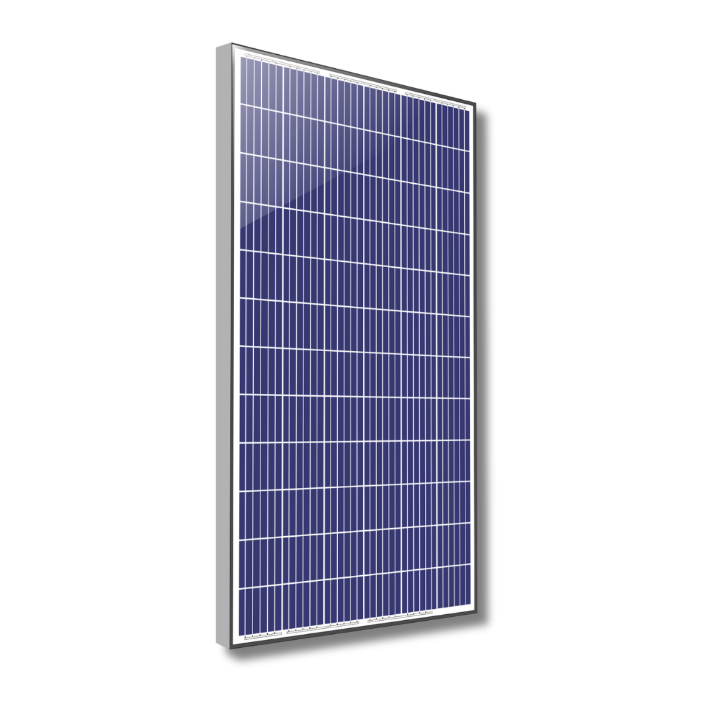
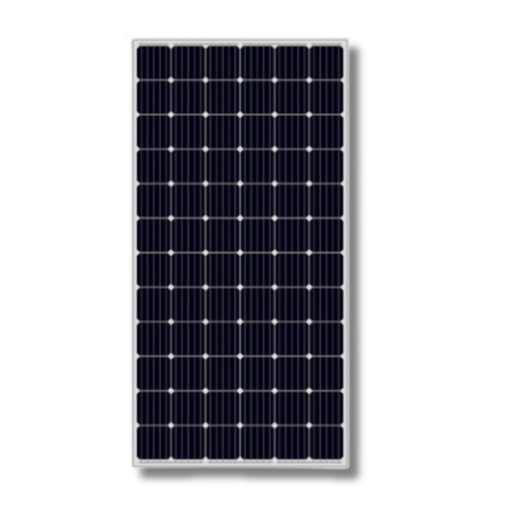
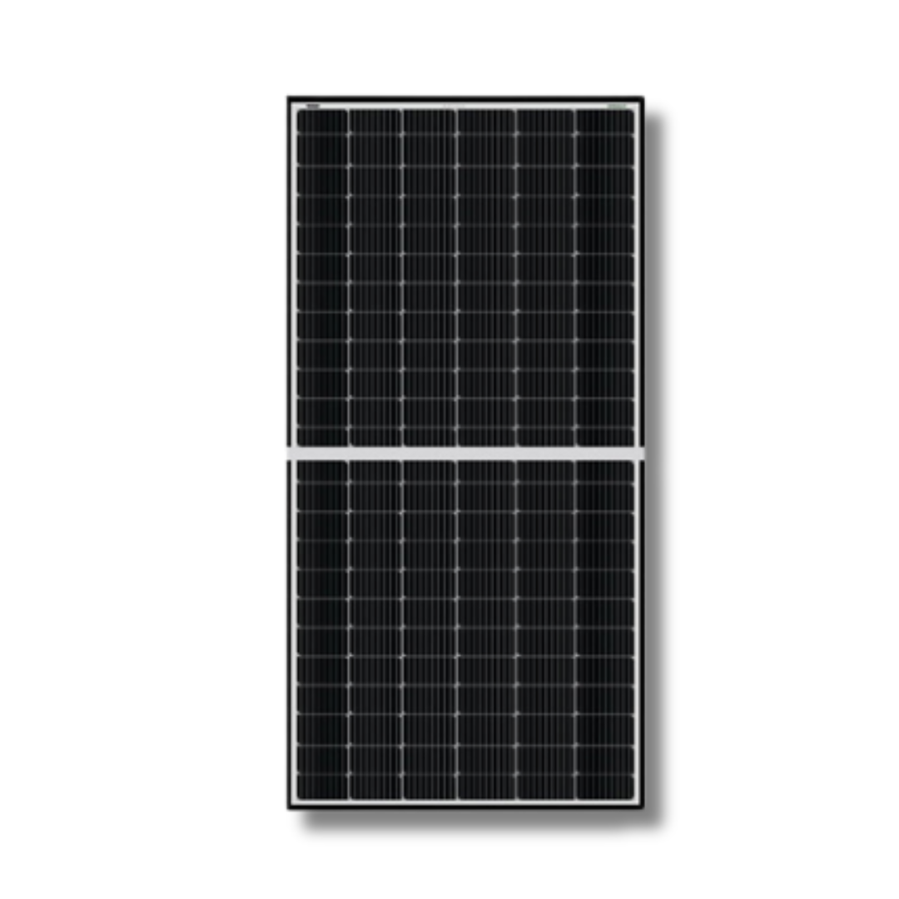
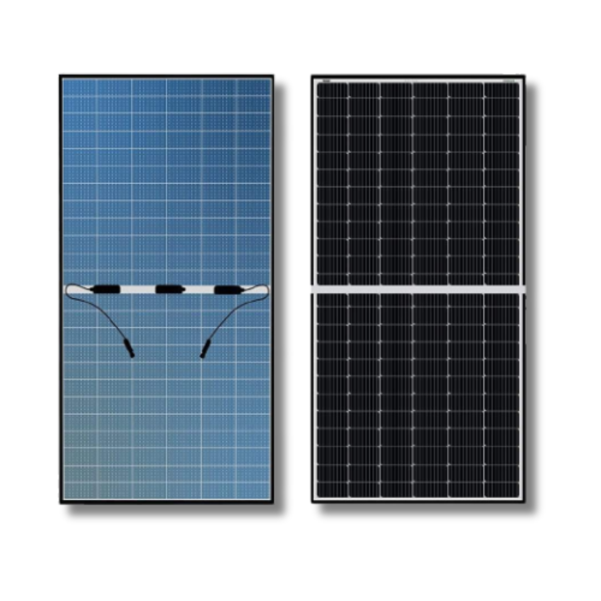

Solor Product
Visit Our Latest Solor Products

Poly Crystalline PV Module
Product Specifications:
- 5 BB 72 Cells
- Maximum Power Output - 340 Wp
- Module Power Range: 330-340 Wp
- Efficiency upto 17.46 %
- Power Tolerance: +4.99Wp
- Maximum System Voltage: 1500 V DC
- Module 10 Years|Output 25 Years -Warranty
- Download Broucher
About Product
Nextron, a renowned polycrystalline solar panel manufacturer is serving clients with a wide range of solar modules, EVA Films and EPC solutions from across the country. Higher efficiency polycrystalline panels are a preferred choice for places within the areas receiving maximum sunlight.
We have a cutting-edge manufacturing facility with all the latest equipment required to manufacture advanced polycrystalline solar panels. PIXON also has a turnkey machinery of 1 GW line capacity. Our solar panels are meant to aid the global climate sustainability. These panels are both used in commercial as well as residential areas. As a leading polycrystalline solar panel manufacturer the company constantly upgrades the technology as per the new solar panel manufacturing trends and techniques in the industry
-
Key features of polycrystalline solar panels
- Safe to use
- High resistance to high temperature, high humidity, and alkali environment
- Generally more eco-friendly than other solar panels
- Good performance even at low irradiation
- Maximum System Voltage is 1500 V DC
- High string length
- Low BOS cost
- Capable of withstanding up to 5400 PA of snow load
- Capable of withstanding up to 2400 PA of wind load
- Solar panels don’t need individual placement of each crystal
- Less wastage while making the polycrystalline solar panels
-
Reasons Why to use and choose our panels
- High durability and reliability of solar panels
- Polycrystalline solar panels have a better lifespan than other panels
- They are more cost-effective
- We use certified and high-quality raw material to make the solar panels
- Our solar panels are tested multiple times before being supplied to the clients
- Our quality team keeps enhancing the quality checking process for the best quality modules
- We use highly advanced technology to make the solar panels
- We can offer guidance to the clients to help them make the right decision
- Our team can cater to your solar panel’s customization requirements as well
-
Applications of polycrystalline solar panels
- Used in big farms
- They are used extensively in roof-mounted arrays
- Off-grid households
- Self-powered devices
- Several commercial and industrial applications
Polycrystalline solar panels are used in large-scale and small-scale installations. They are available in many power wattages. Solar panels are used widely in the residential areas, farms, traffic-lights and much more because of their economical pricing.
As a leading polycrystalline solar panels manufacturer, Nextron has rich experience in making long-lasting solar panels. We have an in-house team of solar panel experts that use their experience and knowledge to transform the solar panel manufacturing industry. We are constantly expanding and spreading our wings even in the global markets. Our aim is to offer the best quality solar panels to our clients at the most competitive prices.

Mono Crystalline PERC PV Module
Product Specifications:
- 5 BB 72 Cells
- Maximum Power Output - 400 Wp
- Module Power Range: 390-400 Wp
- Efficiency upto 20.15 %
- Power Tolerance: +4.99Wp
- Maximum System Voltage: 1500 V DC
- Module 10 Years|Output 25 Years -Warranty
- Download Broucher
About Product
Monocrystalline solar panels are well-known for their high efficiency and better generation capacity. They're constructed of pure silicon. As a result, monocrystalline solar panels convert sunlight into electricity quite effectively. As one of the country's leading monocrystalline solar panel manufacturers. The art turnkey manufacturing plant with 1 GW capacity for producing high-quality solar panels for various applications. We serve our clients in the best possible manner. We are also one of the most trusted monocrystalline solar panels manufacturers because our panels are crafted perfectly with tested quality and all required certifications which contribute to the Global Climate Sustainability.
Nextron monocrystalline solar panels have subtle appearance. The panels can provide you with good savings. We make solar panels using the latest technology in our advanced facility
-
Key features of monocrystalline solar panels
- Monocrystalline solar panels last long
- Better performance even at low irradiation
- These solar panels exhibit high heat resistance
- Made using certified raw material
- High performance even at low irradiation
- Withstand up to 5400 PA of snow load
- Withstand up to 2400 PA of wind load
- Glass with anti-reflective coating improves light transmission
- Increased string length and low BOS cost
- PID resistant with long-term reliability
- High performance in low levels of sunlight
Remarkable Performance
Monocrystalline solar panels conduct electricity in adverse environments as well. They are capable of generating good amount of solar power. Therefore, they are preferred over some of the other types of solar panels.
Aesthetic Appearance
Monocrystalline solar panels not only have higher electricity generation efficiency but they also have appealing appearance.
Wide range of solar panels
Monocrystalline solar panels are used extensively in all types of installations including residential, commercial, industrial, institutional and ground mounted. We have a wide range of monocrystalline solar panels for different purposes. Our clients can select the one that suits their needs from the varied options. We also cater to the needs as per the specific requirements.
Key applications of the monocrystalline solar panels
Commercial
Uses
Utility
Projects
Industrial
Applications
Residential
Projects
Institutional
Projects
Off-grid
Applications

Mono Crystalline PERC HALF-CUT PV Module

About Product
The Mono-crystalline PERC HALF-CUT PV Module is a cutting-edge solar solution engineered for maximum energy efficiency. Its advanced design combines mono-crystalline technology with PERC (Passivated Emitter Rear Cell) enhancements, resulting in a high-performance solar module. This module is ideal for both residential and commercial applications, offering exceptional energy production and long-term reliability.
Nextron monocrystalline solar panels have subtle appearance. The panels can provide you with good savings. We make solar panels using the latest technology in our advanced facility
Key Feature
- High Efficiency: Achieves remarkable energy conversion rates, harnessing more sunlight to generate power.
- PERC Technology: Utilizes Passivated Emitter Rear Cell technology for improved cell efficiency.
- Half-Cut Design: Minimizes energy loss due to shading and increases module reliability.
- Durability: Built to withstand harsh environmental conditions, ensuring long-term performance.
- Anti-Reflective Coating: Enhances light absorption, even in low-light conditions.
- Low Temperature Coefficient: Maintains efficiency even in extreme temperature variations.
- PID Resistance: Resists potential-induced degradation for sustained performance.
- Easy Installation: Streamlined design and compatibility with various mounting systems.
- Reduced LCOE: Lowers the Levelized Cost of Energy (LCOE) through high efficiency and durability, making it a cost-effective choice.

Mono Crystalline PERC BI-FACIAL PV Module
About Product
Elevate your solar energy generation with our cutting-edge Mono-crystalline PERC BI-FACIAL PV Module. This advanced photovoltaic module harnesses the power of mono-crystalline technology coupled with PERC (Passivated Emitter Rear Cell) innovation, offering exceptional efficiency and performance. The module is designed to absorb sunlight from both sides, maximizing energy production. Its robust construction ensures durability, making it ideal for various applications, from residential rooftops to large-scale industrial projects.
Nextron monocrystalline solar panels have subtle appearance. The panels can provide you with good savings. We make solar panels using the latest technology in our advanced facility
- High-efficiency mono-crystalline solar cells: These solar cells are designed for remarkable energy conversion rates.
- Bi-facial design: Captures sunlight from both sides for maximum energy generation.
- PERC technology: Enhances energy conversion efficiency for optimal performance.
- Durable and weather-resistant: Built to withstand harsh environmental conditions for long-term use.
- Suitable for grid-tied and off-grid systems: Versatile for various energy setups.
- Low-light performance: Consistently generates energy even in low-light conditions.
- Anti-reflective coating: Increases sunlight absorption for higher efficiency.
- Ideal for diverse installations: Suitable for ground-mounted and rooftop systems.
- Advanced quality control and testing: Ensures reliability and performance.
- Reduces carbon footprint and lowers energy costs: Environmentally friendly and cost-effective.